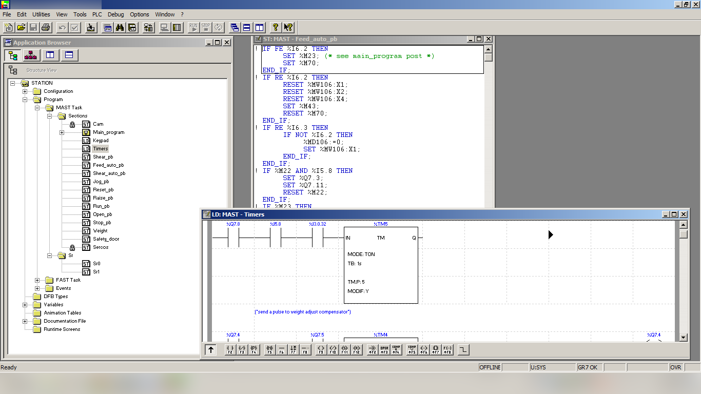
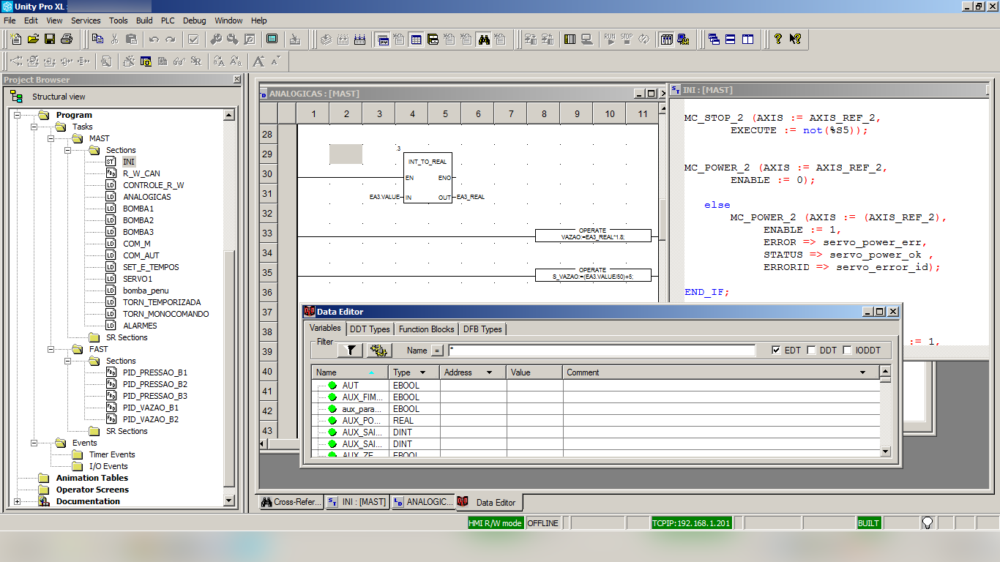
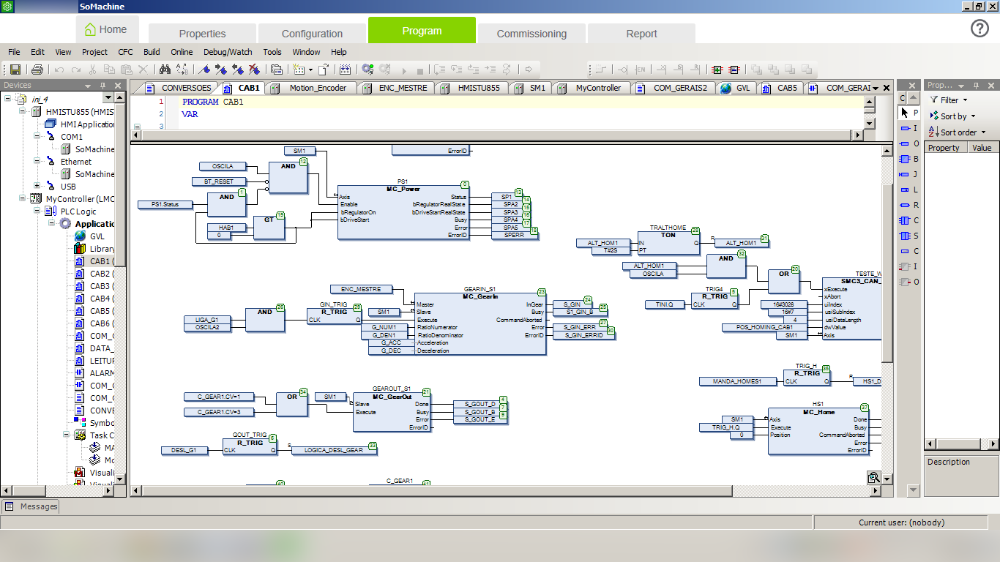
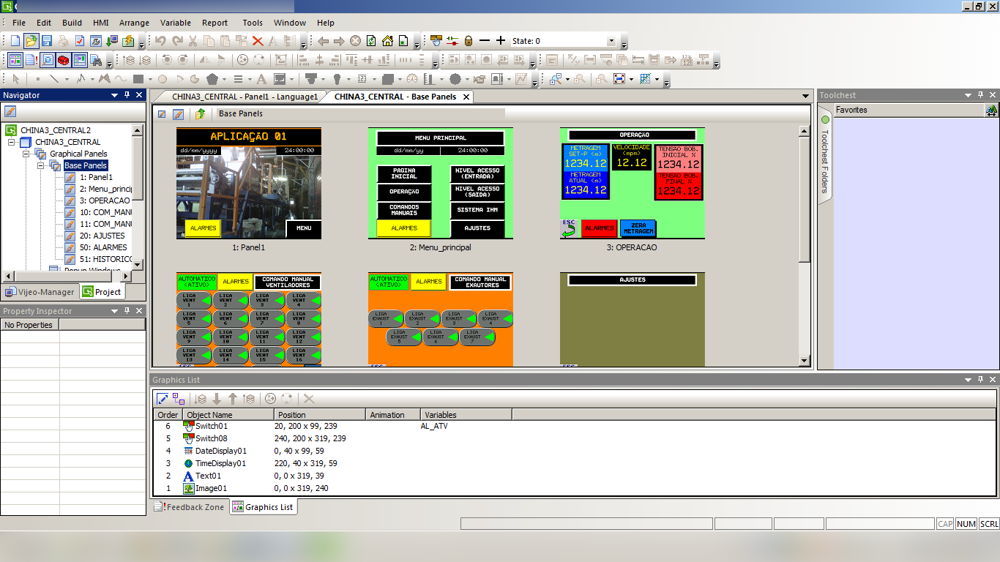
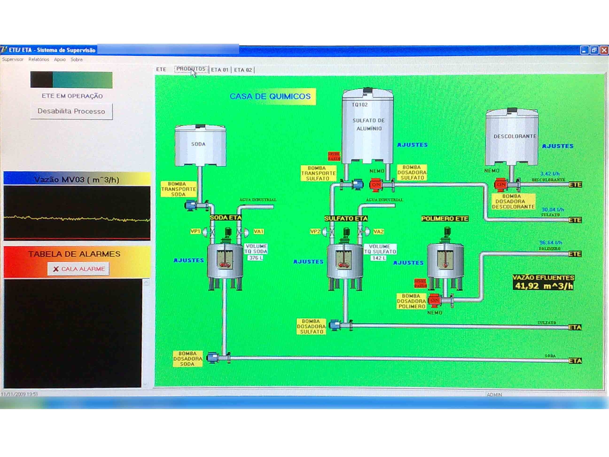
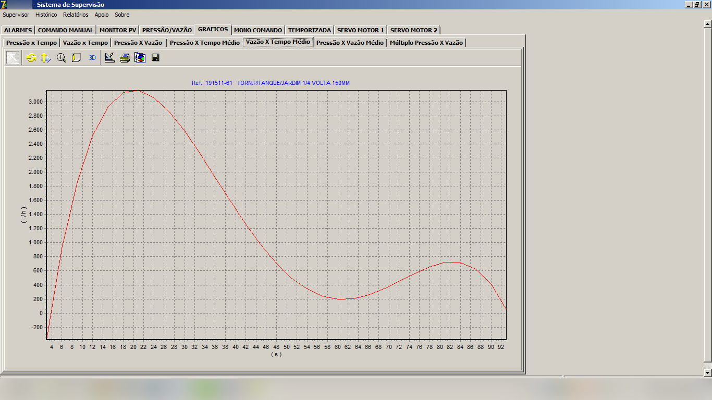
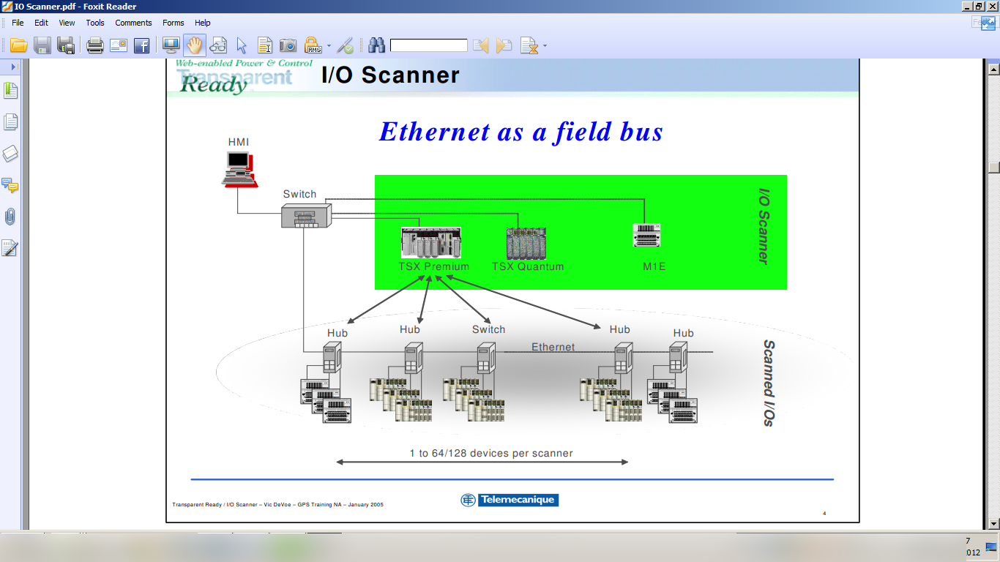
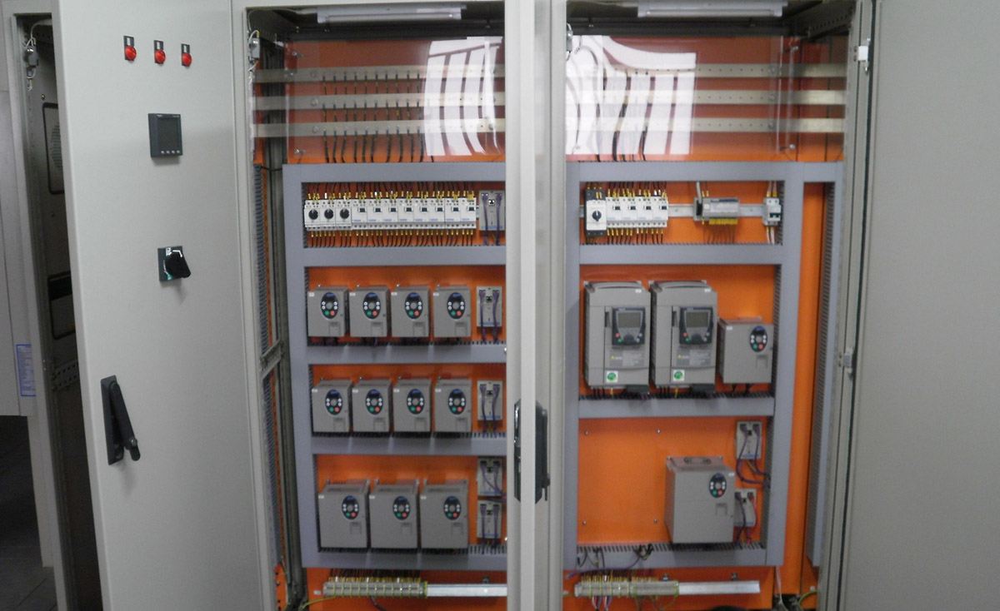
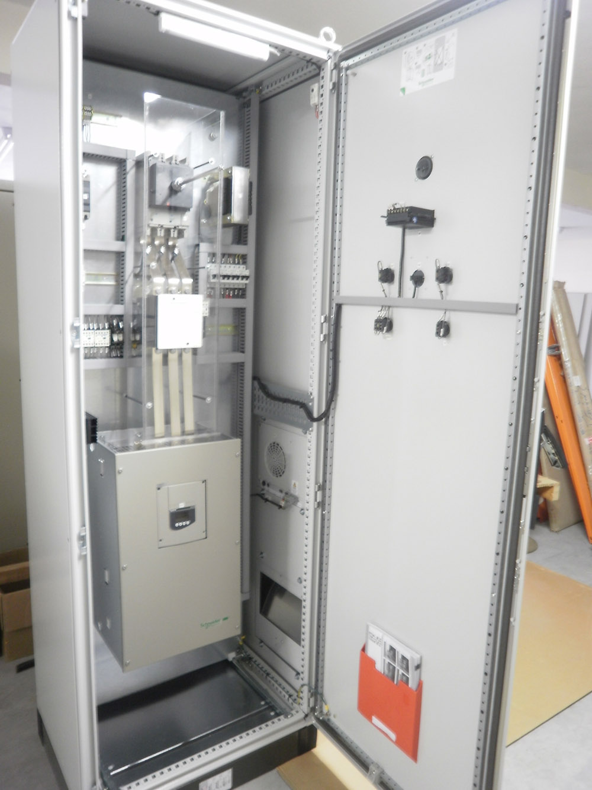

Soluções inteligentes que aumentam a produtividade, melhoram a qualidade e otimizam recursos humanos e materiais.
A INVERTEC busca, em parceria com seus clientes, aplicar as melhores soluções de automação industrial do mercado. Nossa equipe conta com mais de 20 anos de experiência no desenvolvimento de aplicações para CLPs, IHMs, supervisórios e redes industriais.
Desenvolvemos e integramos sistemas de diversos fabricantes, com destaque para a Schneider Electric, da qual a INVERTEC é Integrador Alliance — a mais alta certificação de parceria técnica da marca.
Desenvolvemos aplicações nas mais modernas ferramentas de programação, cobrindo os principais fabricantes do mercado industrial:



Em complemento às aplicações com CLPs, desenvolvemos interfaces modernas e simplificadas para IHMs, otimizando tempos e métodos em processos e máquinas. Criamos telas intuitivas que facilitam a operação e reduzem erros.

Desenvolvemos sistemas de controle e supervisão com geração de relatórios, gráficos de tendência e disponibilização de dados do chão de fábrica para o sistema de gerenciamento empresarial.
Além de ferramentas comerciais, desenvolvemos sistemas de supervisão proprietários com excelente custo-benefício para aplicações de pequeno porte, como estações de tratamento de água, laboratórios químicos e sistemas de testes.


Desenvolvemos projetos utilizando as mais variadas redes industriais — para uso em máquinas ou processos, incluindo integração de múltiplas redes no mesmo sistema. As redes de comunicação reduzem a infraestrutura necessária e melhoram a performance.

A INVERTEC é reconhecida pelo amplo conhecimento em aplicações de soft-starters e inversores de frequência, sempre selecionando o produto correto para a melhor performance do sistema.
Desenvolvemos também sistemas com servoacionamentos, atuando no controle de torque, velocidade, posicionamento e interpolações.


Nossa equipe está pronta para desenvolver o projeto ideal para a sua indústria.
Fale conosco